An original treatment for the approved 5-minute script, cut from Quadra's own office footage. The reference sets the energy, motion language and audio mood; nothing is copied shot for shot. Voiceover and on-screen script wording are unchanged.
Measured from the 89.5-second reference file.
The same principles, with devices of Quadra's own.
Grade: lift exposure +0.2, cool white balance by about 300 K, saturation 95%, gentle S-curve. The orange office wall stays warm as a natural accent. No grain and no letterbox: full 16:9, clean and bright.
Raleway 800 for headlines and section cards (Quadra's brand face). Raleway 600 for chips and labels.
Headlines lower-left on a navy wash, chapter tag top-left (scene number and name), logo top-right, product and partner logos on a white tile lower-right. UI panels sit centred on frosted glass over blurred footage. Safe area 80 px sides, 64 px top.
Times are absolute (mm:ss.s). Beats are at 96 BPM (0.625 s). Footage names are files in Documents/AIG_corporate_Videos; the in-point is in source seconds. 50% speed comes from the 100 fps originals. Crops up to 2× keep full HD because the originals are 4K.
The reference has no payment-style transactions. Its state changes are carried by transitions: a window appears, grows and settles, and a card wipes away to reveal what is next. This plan applies one four-state model to every transition and every UI state change in the film, so each action reads as anticipation, action and confirmation.
4–6 frames. The element scales to 97% or a glow ring appears; the music has a riser or pickup. It tells the eye where to look.
10–16 frames, ease-out (0.16, 1, 0.3, 1). The move, wipe, fill or press. A whoosh or click lands on the frame the action starts.
6–8 frames. A 2–4% overshoot then settle, a tick draws, a pulse ring expands once. Lands on a beat with a soft confirm sound.
Holds at least 1 bar (2.5 s) or until the voiceover finishes the thought. Colour changes to blue or green; the element then exits with a 10-frame fade or hands off to the next wipe.
Glow on the button (anticipation), press to 96% on "the next step" (action), ripple ring and green tick (confirmation), then the button opens into the website and email chips (success). The loop on the left shows the timing at real speed.
| Flow | Where | Anticipation | Action | Confirmation / success | Sound |
|---|
| Time | Bar | Music | Picture that lands on it |
|---|